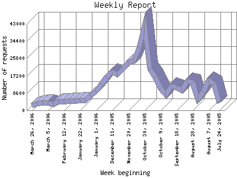

The Weekly Report identifies the activity for each week within the report
time frame. Remember that one page hit can result in several server requests
as the images for each page are loaded.
Note: Depending on the
report time frame for this report the first and last week may not represent
a full seven day week, resulting in lower hits.

| Week beginning | Number of requests | Number of page requests | |
|---|---|---|---|
| 1. | July 24, 2005 | 3,804 | 63 |
| 2. | July 31, 2005 | 13,298 | 321 |
| 3. | August 7, 2005 | 14,728 | 329 |
| 4. | August 14, 2005 | 9,174 | 324 |
| 5. | August 21, 2005 | 5,555 | 225 |
| 6. | August 28, 2005 | 13,982 | 304 |
| 7. | September 4, 2005 | 14,560 | 332 |
| 8. | September 11, 2005 | 9,904 | 327 |
| 9. | September 18, 2005 | 11,182 | 351 |
| 10. | September 25, 2005 | 12,135 | 251 |
| 11. | October 2, 2005 | 7,787 | 261 |
| 12. | October 9, 2005 | 10,829 | 296 |
| 13. | October 16, 2005 | 16,421 | 508 |
| 14. | October 23, 2005 | 20,356 | 628 |
| 15. | October 30, 2005 | 42,223 | 760 |
| 16. | November 6, 2005 | 31,132 | 854 |
| 17. | November 13, 2005 | 24,463 | 715 |
| 18. | November 20, 2005 | 23,921 | 677 |
| 19. | November 27, 2005 | 20,417 | 577 |
| 20. | December 4, 2005 | 17,768 | 607 |
| 21. | December 11, 2005 | 19,149 | 619 |
| 22. | December 18, 2005 | 16,355 | 560 |
| 23. | December 25, 2005 | 12,815 | 477 |
| 24. | January 1, 2006 | 9,441 | 404 |
| 25. | January 8, 2006 | 7,338 | 367 |
| 26. | January 15, 2006 | 5,104 | 303 |
| 27. | January 22, 2006 | 5,036 | 396 |
| 28. | January 29, 2006 | 4,802 | 398 |
| 29. | February 5, 2006 | 4,692 | 327 |
| 30. | February 12, 2006 | 4,544 | 309 |
| 31. | February 19, 2006 | 4,394 | 353 |
| 32. | February 26, 2006 | 2,814 | 307 |
| 33. | March 5, 2006 | 3,852 | 400 |
| 34. | March 12, 2006 | 3,682 | 325 |
| 35. | March 19, 2006 | 3,386 | 364 |
| 36. | March 26, 2006 | 2,211 | 247 |
Most active week beginning November 6, 2005 : 854 pages sent.
Weekly average: 401.783783783784 pages sent. 11709.5675675676 requests handled. 492.847 TB bytes served.
This report was generated on March 30, 2006 04:52.
Report time frame July 28, 2005 09:49 to March 29, 2006 23:38.
| Web statistics report produced by: | |
| analog 5.1 | Report Magic for Analog 2.10 |